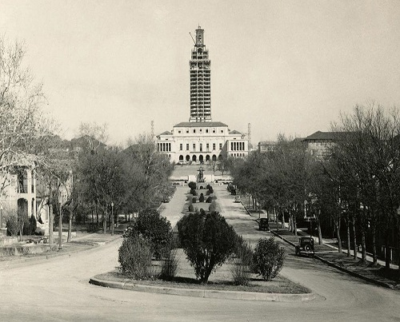
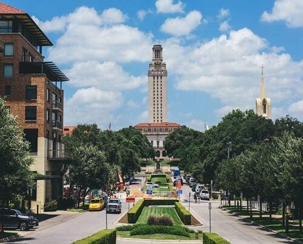
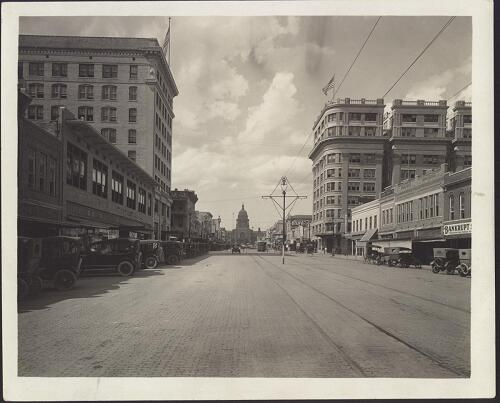
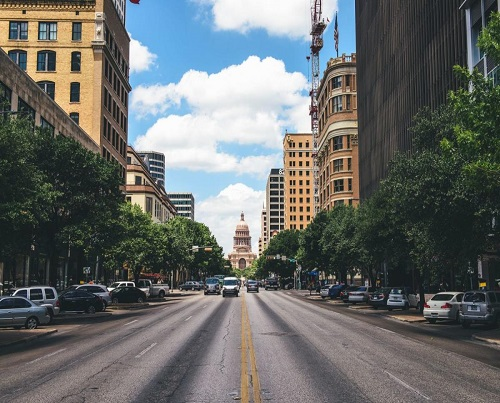

Upcoming Events
Self-Love Sunday Free Outdoor Yoga
Join Alyssa Clark on the lawn at My Vinyasa Practice for a FREE Community Outdoor Yoga! They gather at noon to flow under the Austin sun every Sunday. Alyssa Clark will lead you through a 60 minute all-levels flow focused on loving and giving gratitude to the most important person in your life – you!
Jaws On the Water
This summer, the Alamo Drafthouse is partnering with Action Pack Entertainment and High Beam Events to bring JAWS on the Water back to Volente Beach on Lake Travis! Get ready for scuba divers (and maybe other critters) lurking in the depths beneath your tube, ready to grab your dangling toes during on screen shark attacks!
Floral Buttercream Workshop
Join Sweet Bouquets Cupcakes for a fun night learning about buttercream and how to transform it into beautiful flowers. They will teach you how to pipe 5 different flowers and show you how to arrange them into a 7 cupcake bouquet for you to take home. All supplies are provided, just bring yourself, a friend and a willingness to learn!
Austin's History
The state’s fourth largest city, Austin originated as the riverside village of Waterloo. In 1839, it was selected by scouts as the site for the permanent capital of Texas and renamed to honour Stephen F. Austin. Now Austin is a busy hub for outstanding food, great live music venues, and its general weirdness. Its rapidly rising in popularity as a place to live and visit, thanks to a fantastic culture and friendly locals. But it was not always the place it is today, and these pictures give us an insight to what the most popular Austin attractions looked like over 50 years ago.
Barton Springs in the thirties. Photograph by the Austin History Center, Austin Public Library
 UT Tower under Construction. Photograph taken January 31, 1936; Crediting Austin History Center, Austin Public Library
 Photograph, 1918; Crediting Austin History Center, Austin Public Library